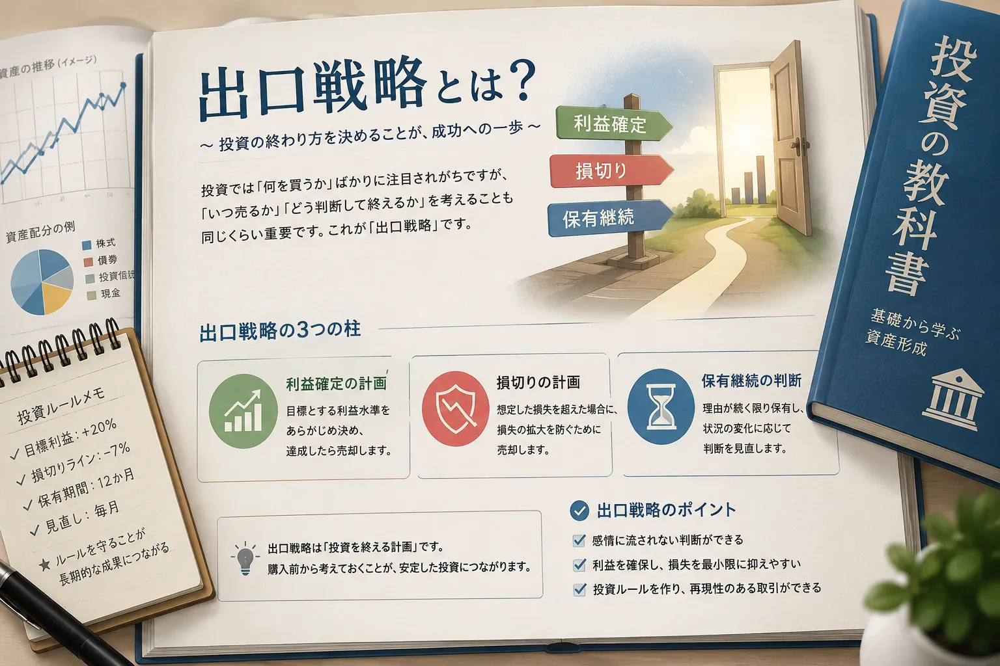

Investment Method
出口戦略とは？
投資では「何を買うか」に注目しがちですが、実際には「いつ利益確定するか」「いつ損切りするか」「どのような条件なら保有を続けるか」も重要です。出口戦略とは、投資を終える場面をあらかじめ考えておく計画のことです。
Introduction
買う前に「どう終えるか」まで考える

投資初心者は、銘柄選びや買うタイミングに意識が向きやすいものです。しかし、買った後に売却基準がないと、利益が出ても迷い、損失が出ても判断が遅れやすくなります。
出口戦略は、投資を始める前から「どのような状態になったら売るのか」を整理しておく考え方です。事前にルールを持つことで、感情に流されにくくなります。あわせて、投資ルールを決める重要性とは？も確認しておくと、判断基準を作る考え方が整理しやすくなります。
Basic
出口戦略とは？
出口戦略とは、投資をどのタイミングで終えるかを考える計画です。単に「売る」だけではなく、利益確定・損切り・保有継続の判断を含みます。
Profit Taking
利益確定の計画
どのくらい利益が出たら売るのかを考えます。目標を決めておくと、利益が出た後に欲張りすぎたり、逆に早く売りすぎたりする判断を減らしやすくなります。
Loss Cut
損切りの計画
どの水準まで下がったら損失を受け入れるかを考えます。損切りの考え方は、損切りとは？判断方法の例を解説で詳しく整理しています。
Hold or Sell
保有継続の判断
すぐに売らず、保有を続ける条件も出口戦略の一部です。投資理由が変わっていないか、資金を使う予定がないかなどを確認します。
Importance
なぜ出口戦略が重要なのか？
感情的な判断を減らせる
投資では、利益が出るともっと伸びる気がして、損失が出ると戻るまで待ちたくなることがあります。出口戦略を決めておくと、その場の感情だけで判断する場面を減らしやすくなります。損失時の心理については、損失が出ると冷静な判断ができなくなる理由も参考になります。
利益確定で迷いにくくなる
利益が出ても、どこで売るかを決めていないと判断が難しくなります。目標利益や売却条件をあらかじめ決めておくことで、利益確定の迷いを減らせます。利益を伸ばす考え方は、損小利大とは？でも解説しています。
損失拡大を防ぎやすくなる
損切り基準がないと、含み損を見て判断を先延ばしにしやすくなります。結果として、損失が大きくなったり、予定外の資金を追加したりすることがあります。
投資ルールを作りやすくなる
出口戦略は、投資ルールの中心になる考え方です。買う理由、売る理由、損切りする理由を整理しておくことで、取引ごとの振り返りもしやすくなります。
Examples
出口戦略の代表的な考え方
出口戦略に正解が一つあるわけではありません。投資期間、目的、商品、リスク許容度によって使いやすい考え方は変わります。
目標利益で売却する
たとえば「10％上がったら一部売る」「目標金額に達したら利益確定する」といった方法です。あらかじめ目標を決めることで、利益が出た後の迷いを減らしやすくなります。
損切りラインで売却する
「購入価格から何％下がったら売る」「想定していた投資理由が崩れたら売る」など、損失を広げないための基準を決めます。短期取引ほど重要になりやすい考え方です。
期間を決めて保有する
「半年後に見直す」「3年後まで保有方針を確認する」など、期間を基準にする方法です。毎日の値動きに振り回されにくくなる一方で、定期的な点検は必要です。
状況に応じて継続する
業績、金利、相場環境、自分の資金計画などを見ながら、保有を続けるか判断します。ただし「なんとなく持ち続ける」と区別するため、継続する理由を言語化しておくことが大切です。
Risk
出口戦略がないと起きやすいこと
利益確定が早すぎる
少し利益が出ただけで不安になり、早く売ってしまうことがあります。もちろん利益確定自体は悪くありませんが、毎回小さな利益で終わると大きな上昇を取り逃がす場合もあります。
損切りできない
損失を確定したくない気持ちから、売却判断を先延ばしにしやすくなります。出口を決めていないと「戻るはず」という期待だけで保有し続けることがあります。
ナンピンしてしまう
損失を取り返そうとして、計画なく買い増ししてしまうことがあります。ナンピンの心理と注意点は、なぜ人はナンピンしてしまうのか？で整理しています。
出口戦略がない状態では、相場の動きに合わせて判断がぶれやすくなります。結果として、利益確定・損切り・買い増しのすべてが感情的になりやすい点に注意が必要です。
Point
初心者が意識したいポイント
-
購入前に売却基準を考える
買った後に考えると、すでに感情が入ってしまいます。購入前に利益確定・損切り・見直し時期を簡単に決めておきましょう。
-
感情ではなくルールを使う
相場が動くと不安や期待が強くなります。だからこそ、事前に作ったルールを判断の土台にすることが大切です。
-
相場に絶対はないと考える
どれだけ考えても、すべての値動きを正確に読むことはできません。出口戦略は「必ず勝つ方法」ではなく、判断のぶれを減らすための考え方です。
-
柔軟さと一貫性のバランスを取る
ルールを守ることは大切ですが、前提条件が大きく変わった場合は見直しも必要です。なんとなく変更するのではなく、変更理由を明確にしましょう。
Summary
まとめ
出口戦略は、投資における重要な考え方です。何を買うかだけでなく、買う前から「いつ利益確定するのか」「いつ損切りするのか」「どの条件なら保有を続けるのか」を考えておくことで、感情的な判断を減らしやすくなります。
長期的な資産形成では、焦って売らないことも大切です。一方で、何も考えずに持ち続けることとは違います。長期投資の基本は長期投資とは？、待つことの難しさは投資で“待つ”のが難しい理由とは？でも確認できます。
よくある質問
-
Q. 出口戦略とは簡単に言うと何ですか？
投資をいつ終えるかを事前に考えておく計画のことです。利益確定、損切り、保有継続の基準を整理する考え方です。 -
Q. 利益確定のタイミングはどう決めればいいですか？
目標利益、投資期間、相場環境、自分の投資目的などをもとに決めます。初心者は購入前に大まかな売却基準を考えておくと迷いにくくなります。 -
Q. 損切りも出口戦略に含まれますか？
はい。損切りも投資を終える判断の一つなので、出口戦略に含まれます。損失が大きくなる前に判断するための重要な基準です。 -
Q. 長期投資でも出口戦略は必要ですか？
必要です。長期投資でも、資金を使う時期、投資目的の変化、商品の前提が変わった場合などに備えて、出口の考え方を持っておくことが大切です。
一般ユーザー目線の体験でおすすめの会社をご紹介

ご利用にあたっての注意事項
本記事は情報提供を目的としており、投資の勧誘を目的としたものではありません。株式・投資信託・外国証券等の取引は元本保証がなく、相場変動等により損失が生じる場合があります。取引開始前に、契約締結前交付書面や商品説明書、目論見書等を必ずご確認のうえ、ご自身の判断と責任でお取引ください。